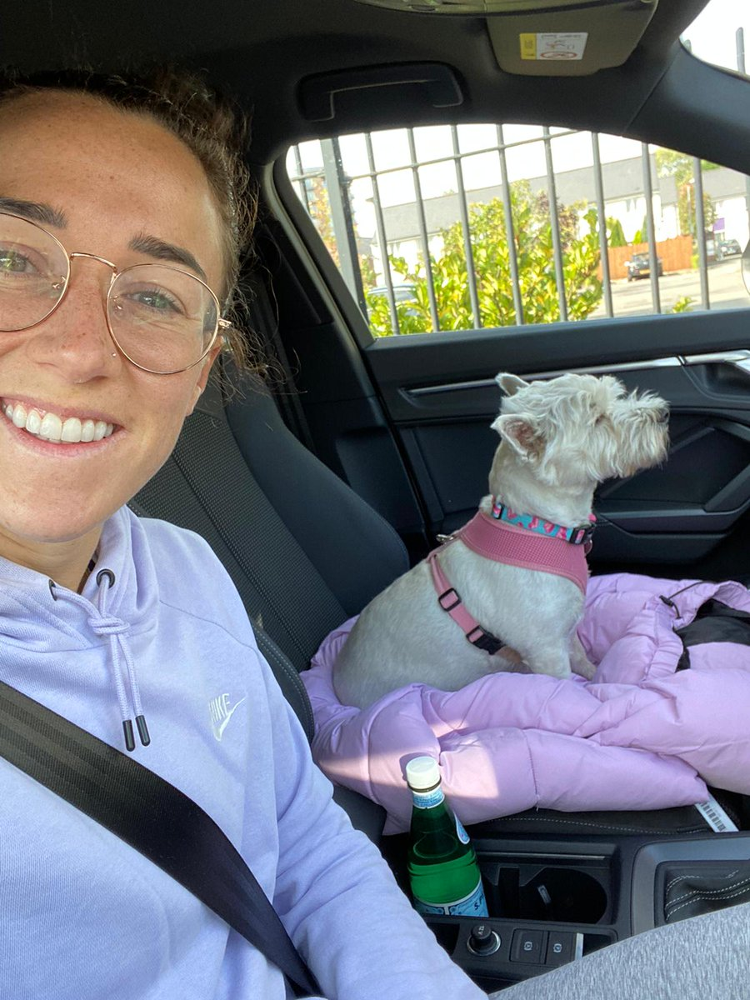
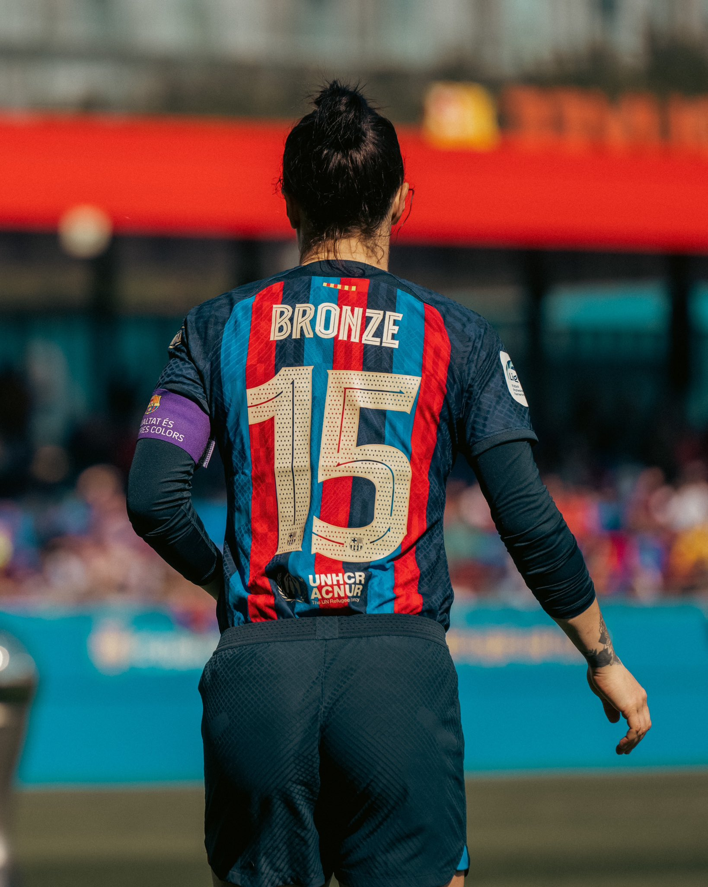
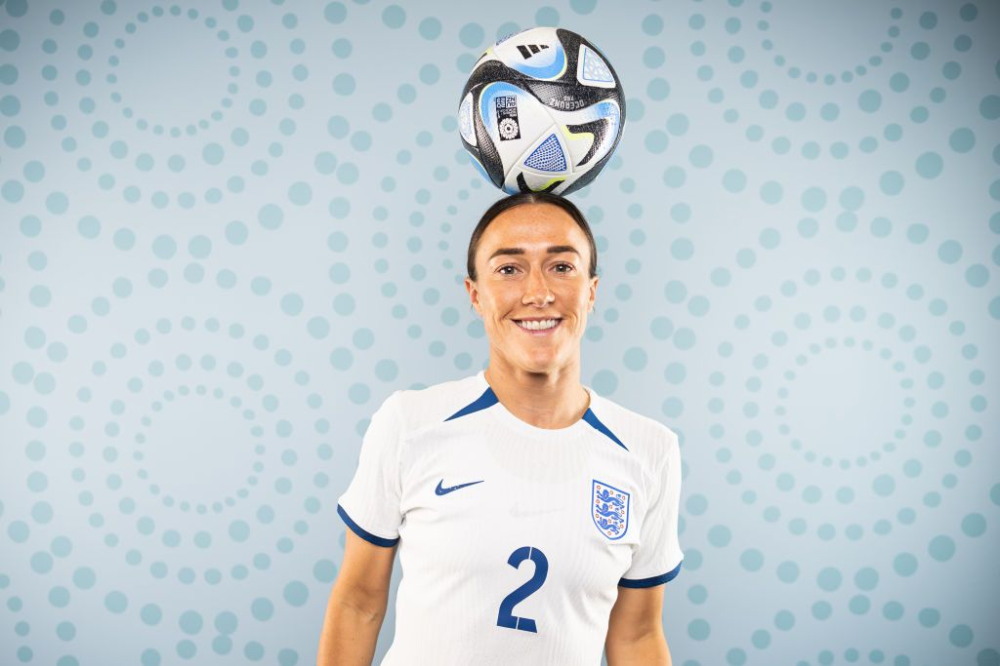

Lucy Bronze kasvoi Englannissa.
Lucy on englantilainen ja portugalilainen.
Lucy opiskeli Yhdysvalloissa, University of North Carolinassa.
Lucyn perhe on jo hänen nuoruudestaan lähtien ollut suuresti mukana jalkapallo maailmassa ja tukeneet Lucya.
Lucy on tunnetusti hyvin yksityinen ihminen, mutta jakaa elämästään Instagramissa. Lucyn läheisimpiä kavereita ovat Jordan Nobbs ja Lauren James. Lucylla on koira nimeltään Narla. Narla viettää osan ajastaan Lucylla Barcelonassa ja välillä Manchesterissa.
2022- FC Barcelona
2013- England
